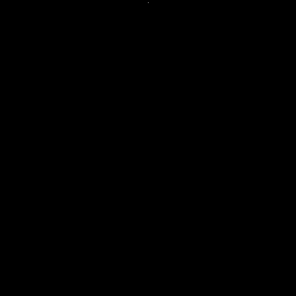

La belleza de la simplicidad: La Rule 90 y los patrones fractales |
Introducción e HistoriaEl estudio de los sistemas complejos ha revelado que la naturaleza no siempre necesita instrucciones complicadas para crear estructuras asombrosas. Un ejemplo fundamental de este fenómeno es la Rule 90, un autómata celular elemental que, a pesar de su sencillez lógica, es capaz de generar patrones fractales de una belleza matemática perfecta. El nombre "Rule 90" proviene de la notación de Wolfram, un sistema de numeración binaria diseñado para clasificar los algoritmos de autómatas celulares. Aunque el concepto fue desarrollado originalmente por Stanislaw Ulam y John von Neumann en la década de 1940 para estudiar la autorreplicación, fue el físico y matemático Stephen Wolfram quien, en 1983, sistematizó el estudio de las reglas unidimensionales analizando las 256 combinaciones posibles. |
 |
Mecánica y Evolución de la Rule 90La Rule 90 opera en un espacio unidimensional (una fila de células) y evoluciona a través de pasos de tiempo discretos. La esencia de la Regla 90 es la operación XOR (O exclusivo). En cada paso de tiempo, el estado de una célula se determina observando únicamente a sus dos vecinas inmediatas de la generación anterior:
La conversión de su tabla de verdad da como resultado el número binario 010110102, que equivale al número 90 en sistema decimal (64 + 16 + 8 + 2 = 90). Cuando el algoritmo comienza con una única célula activa, la interacción local produce autosemejanza infinita: el Triángulo de Sierpinski. |
|
Propiedades Avanzadas y la Clasificación de WolframClasificación de Wolfram (Clase III): Stephen Wolfram organizó los autómatas celulares en cuatro clases según su comportamiento a largo plazo. La Regla 90 pertenece a la Clase III, la cual agrupa a los sistemas que exhiben un comportamiento caótico y aperiódico. Sin embargo, a diferencia de otras reglas puramente caóticas de esta clase (como la Regla 30), la Regla 90 destaca porque sus estructuras caóticas se autoorganizan de manera lineal, formando patrones geométricos completamente predecibles a gran escala. Dimensión Fractal Desafiante: El patrón generado por la Regla 90 (el Triángulo de Sierpinski) desafía la geometría euclidiana tradicional. No es una línea de una dimensión (1D) pero tampoco es una figura sólida de dos dimensiones (2D). Utilizando la matemática fractal, se determina que posee una dimensión de Hausdorff fraccionaria de aproximadamente 1.585 [calculada exactamente como log(3) / log(2)]. Esto significa que llena el espacio más que una línea, pero menos que un plano plano. |
Aplicaciones Críticas en la Ciencia ModernaLejos de ser una simple curiosidad visual, este sistema se implementa activamente en campos de vanguardia: Generación de Números Aleatorios: Debido a su capacidad para crear secuencias difíciles de predecir, se utiliza fuertemente en el desarrollo de algoritmos de criptografía y seguridad informática. Modelado de Fenómenos Naturales: Ayuda a científicos a entender cómo se propagan dinámicamente los incendios forestales, la forma en que crecen ciertos cristales de manera geométrica o incluso cómo se definen los patrones pigmentarios en las conchas de moluscos marinos. Síntesis de Imágenes: Es una herramienta base de computación gráfica en el renderizado y generación de texturas fractales complejas de manera eficiente y rápida. |
ConclusiónLa Rule 90 es un testimonio de cómo la simplicidad puede dar lugar a la complejidad. A través de una regla de actualización extremadamente simple, se generan patrones fractales de una belleza y complejidad asombrosas, desafiando nuestras intuiciones sobre el orden y el caos. Este autómata celular no solo es un objeto de estudio fascinante en matemáticas y ciencias de la computación, sino que también tiene aplicaciones prácticas en campos tan diversos como la criptografía, la modelización de fenómenos naturales y la generación de gráficos por computadora. En última instancia, la Rule 90 nos recuerda que incluso las reglas más simples pueden conducir a resultados extraordinarios. |
ReferenciasÁlvarez Parrilla, Á., & Espinoza Valdéz, A. (2008). Autómatas Celulares Aditivos: la regla 150 vs. la regla 90. Revista del Centro de Investigación de la Universidad La Salle, 8(30), 15-28. 1..... Rechtman, R. (1991). Una introducción a autómatas celulares. Revista Ciencias de la Universidad Nacional Autónoma de México (UNAM), (24), 48-55.2..... Salcido, A. (2019). Introducción a los Autómatas Celulares: Modelos de Sistemas Físicos. Instituto Nacional de Ecología y Cambio Climático / ResearchGate.3..... |
CuestionarioCompleta este cuestionario para calificar este trabajo y obtener tu certificado de participación. |